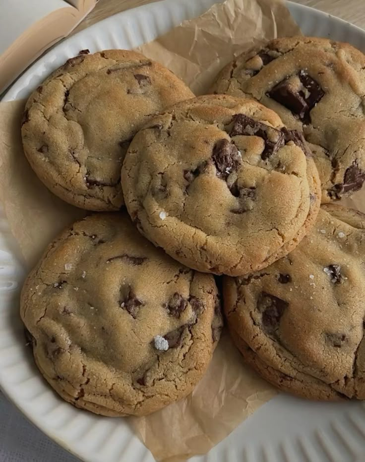

Ingredients
- 1 cup browned butter, cooled
- 1 cup brown sugar
- 1/2 cup granulated sugar
- 2 eggs
- 1 tbsp vanilla extract
- 2 1/2 cups all-purpose flour
- 1 tsp baking soda
- 1/2 tsp salt
- 1 1/2 cups chocolate chips
Instructions
- Preheat oven to 350°F (175°C) and line a baking sheet with parchment paper.
- Whisk browned butter with sugars until smooth, then add eggs and vanilla.
- Stir in flour, baking soda, and salt until a dough forms.
- Fold in chocolate chips.
- Scoop dough onto the baking sheet and bake 10–12 minutes until golden brown.
- Cool on a rack and enjoy warm.